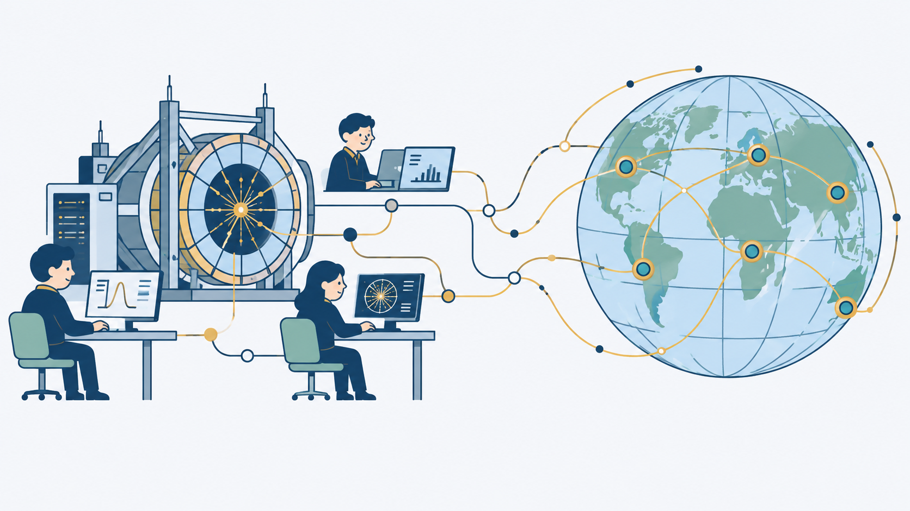
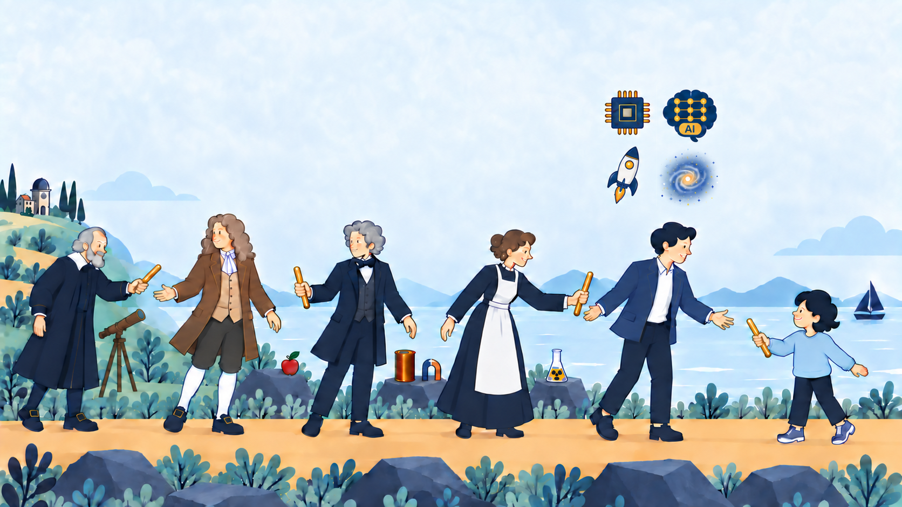

{kind=link}
{kind=link}
.jpg){kind=link}
Why We Invest in Basic Science?
Basic science is funded mainly by governments — in other words, by taxpayers. In the United States, the federal government spends tens of billions of dollars on basic research each year. The latest figure is more than $44 billion, or about $130 per person each year.
That money could be used elsewhere. It could pay for more scholarships for students who cannot afford college, another care center for people with disabilities, or someone's hospital bill. There are many places where a dollar can ease suffering right now. So why do we use this money to try to answer questions that may not seem useful in everyday life? For example, how do stars die? How do unstable subatomic particles decay? What is the faint light left from the universe's first moments?
I think there are two reasons.
We do not know where discovery will lead
Investing in basic science is like searching for new continents. Some expeditions discover continents rich in iron ore. Others find only empty continents of ice. But centuries later, a huge oil field may be discovered beneath that ice. Even a voyage that finds no valuable land can give us better compasses, better ships, and better maps. These tools help everyone who explores after us.
The history of basic science shows this pattern again and again. Quantum mechanics began with scientists asking what happens inside an atom. No one expected it to make money. But this curiosity led to the transistor. Transistors led to the semiconductor industry, and that industry gave us modern electronic devices. Today, semiconductors are used in smartphones, cars, satellites, CT scanners, industrial robots, solar power, artificial intelligence, and quantum computers.

The World Wide Web began in the same way. Physicists at CERN built a simple tool to share experimental data. That small tool is now the nervous system of modern society.

Space research also brings benefits to life on Earth. Weather and communication satellites are direct uses of space technology. Technologies developed for space research have also helped create or improve products on Earth: technology developed to make spacecraft cameras smaller and more energy-efficient is used in the CMOS image sensors in phone cameras, rocket-engine flow research helped improve heart-assist pumps, and precise GPS technology developed for space research helped tractors steer themselves. These benefits show how knowledge and tools can find uses far beyond their original goals.

It tells us what we are
But the possibility that basic science may bring economic rewards someday is only part of the answer. It affirms the very value of human existence.
The universe is about 13.8 billion years old. The roots of human civilization go back around 12,000 years, to early farming communities. Compared with the universe, Earth is smaller than a speck of dust. Human life lasts only a moment in the history of the universe — we are here, then gone. Yet humans, who live only briefly on this tiny planet, have measured the age and size of the universe and are coming to understand how it began and took shape.
To see how remarkable this is, reverse the scale. Imagine a tiny, single-celled creature like a paramecium, curious about the world around it. It begins to explore and learn, passing what it learns to the next generation. Each generation adds to that knowledge. Eventually, these creatures discover that Earth spins and travels around the Sun. They understand why the Sun rises and sets, and how Earth’s tilted axis, as Earth moves around the Sun, causes the seasons to change. It may sound impossible, but this is what humanity is doing as we try to understand the universe.

What we inherited, and what we will pass on
We inherited our civilization from past generations. We stand on thousands of years of human effort. Now it is our turn to add a little more and pass it on.
Investing in basic science is one way we join this relay. We carry on the aspirations of past generations, move a little further forward in our own lives, and pass them on to the next generation. Human dreams never end.
